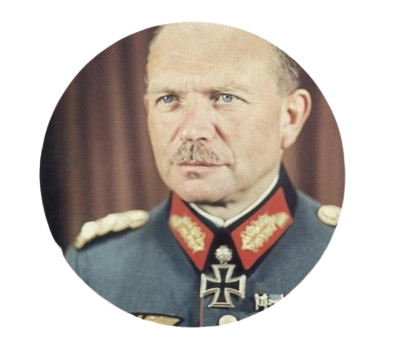

Heinz Guderian nasceu na cidade de Kulm, na Prússia Oriental. Entrou para o Exército no ano de 1907 como
cadete. Serviu em
diversas unidades de sinalização no início da Primeira Guerra Mundial, ocupando após vários postos no staff.
Encerrou a guerra com a patente de Hauptmann (capitão).
No período de entreguerras teve papel importante na criação da arma motorizada,
tendo revolucionado a doutrina do uso de blindados com o livro que ele publicou no ano de 1937,
intitulado de Achtung Panzer!
Foi promovido para Oberst (coronel) no dia 1 de outubro de 1933, sendo designado,
no dia 1 de julho de 1934, comandante das unidades motorizadas,
assumindo mais tarde o comando da 2ª Divisão Panzer quando esta
foi criada no dia 15 de outubro de 1935.
Foi promovido para Generalmajor (major-general) no dia 1 de agosto de 1936, Generalleutnant (tenente-general)
no dia 10 de fevereiro de 1938 e General der Panzertruppe no dia 23 de novembro de 1938.
Assumiu o comando do XVI Corpo de Exército no dia 1 de abril de 1938 e em seguia do XIX Corpo de
Exército no dia 26 de agosto de 1939, estando no comando
desta unidade quando foi promovido para Generaloberst (coronel-general) no dia 19 de julho de 1940.
No começo da Segunda Grande Guerra, Guderian liderou um corpo de blindados na invasão da Polônia, em 1939.
No ano seguinte, durante a invasão da França, ele comandou as unidades
blindadas que atacaram os franceses pela floresta das Ardenas e sobrepujaram as forças Aliadas na
Batalha de Sedan. Ele liderou o 2º
Exército Panzer durante a Operação Barbarossa, a invasão alemã da União Soviética.
A operação terminou em fracasso na Batalha de Moscou.
Após a Batalha de Moscou e um desentendimento com o Marechal von Kluge, ele foi dispensado do serviço ativo no
mês de dezembro de 1941. Foi reconvocado no dia 28 de fevereiro de 1943, Adolf Hitler indicou Guderian, como
Inspetor das Tropas Blindadas, assumindo no dia 21 de julho o comando do Staff do OKH (o alto-comando do
Exército).
Na posição de Inspetor-Geral de Tropas Motorizadas ele tinha a responsabilidade de reconstruir e treinar
nova divisões panzer mas teve pouco sucesso devido ao declínio e deterioração da economia de guerra alemã. Em
1944, Guderian foi apontado então como Chefe Interino do Estado-Maior do Alto Comando do Exército,
imediatamente após o Atentado de 20 de Julho contra Hitler. Ele negou envolvimento com movimentos antinazistas
dentro do exército, embora houvesse evidências circunstanciais de que ele de fato os apoiasse.
Em 1944, Guderian foi colocado no comando da "Corte de Honra" de Hitler, que, após a tentativa de assassinato
de Hitler, foi usada para demitir oficiais das forças armadas para que pudessem ser julgados no "Tribunal do
Povo" e executados.[6] Segundo vários historiadores, ele teria tido conhecimento da conjura contra Hitler, e
convidado a integrá-la, recusou, seguindo o método de "esperar para ver". Ele passou então a ser o
conselheiro pessoal de Hitler para a Frente Oriental e se tornou extremamente associado ao regime nazista. As
tropas de Guderian executaram com cruel precisão a chamada "Ordem dos Comissários" durante a Operação
Barbarossa, e ele foi implicado na comissão de represálias após a Revolta de Varsóvia de 1944.
Heinz Guderian se rendeu para as forças dos Estados Unidos em 10 de maio de 1945 e permaneceu sob custódia até
1948.

Nome completo: Heinz Wilhelm Guderian
Nascimento: 17 de junho de 1888
Morte: 14 de maio de 1954
Anos de serviço: 1907–1945
Patente:Coronel-general
Conflitos: As duas grandes guerras